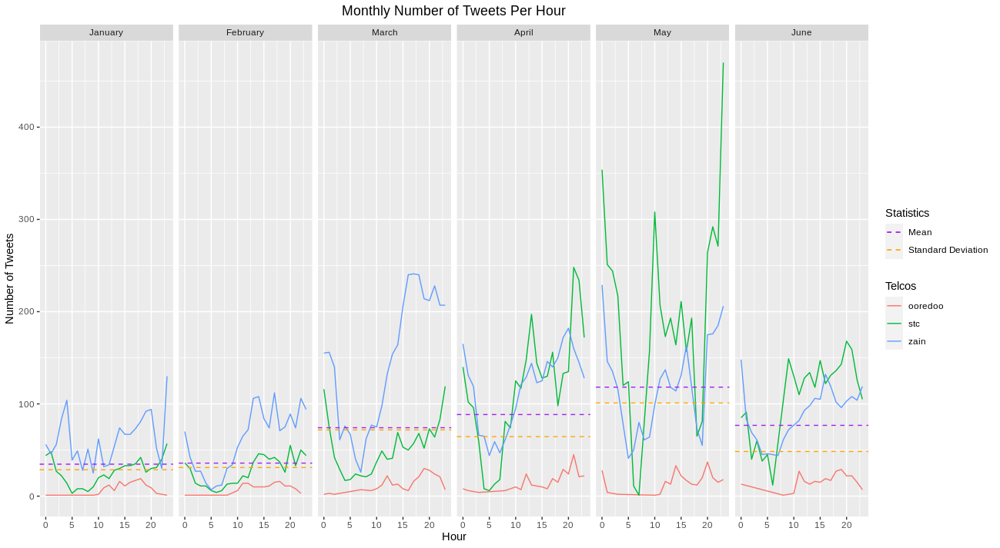

A Twitter Analysis of Kuwait's Telecom Operators
Fri 24 July 2020
The purpose of this analysis is to look at the behavior of the 3 Kuwait-based telecommunications operators (Zain, STC, and Ooredoo) on Twitter over a 6 month period from January 2020 through to June 2020.
All information is publicly available on Twitter.
If a plot is too small you can right click -> view image.
Number of Tweets
@zainkuwait 14204
@stc_kwt 12202
@ooredookuwait 1344
It is evident that Ooredoo is the least active on Twitter out of the 3.
Word Clouds
Below is the word cloud for all 3 telecom operators. We can see a clear difference between all 3:
ZAIN
STC
OOREDOO

- Zain and STC have the most interactions with customers.
- Typical customer service keywords are the most common (a higher percentage than Ooredoo).
- Ooredoo also has a lot of interactions with their customers. However, their pushing and marketing of their offers is of a higher percentage than Zain or STC.
- We know this because a lot of the prominent 'words' are numbers, signifying that they are tweeting about prices of their offers.
- Typical offer keywords are more prominent: 5g, wifi, huwaei, etc..
Tweet Behavior Analysis
We will explore the daily tweet behavior of each operator.
Number of Tweets per Day
Zain and STC are showing similar tweeting behaviors in tweet volumes per day as well especially starting from the beginning of April 2020. Ooredoo lags behind in comparison.
-
Zain has spikes on 2 days where the volume of tweets were abnormally high.
-
First spike is at the end of January where there were some network issues
-
Second spike is on March 23rd where a decision was announced by all operators that calls will be free until April 20th.
Below is the same chart with the number of tweets being scaled to log10 to have a clearer comparison of the volume of tweets with Ooredoo.
Hourly Tweet Trends
Hourly volume of tweets over 6 months
Zain and STC are showing similar tweeting trends in the highlighted section above. Below is a similar graph segmented into months.

Periodic Tweets Throughout the Day: Monthly View
The highest volume of tweets were during the corona virus lock-down period which started in March 2020 and was gradually lifted in June. The definition of the periods shown in the graph above (hours listed are inclusive):
- Early morning: 7 AM - 9:59 AM
- Late morning: 10 AM -12:59 PM
- Early afternoon: 1 PM - 3:59 PM
- Late afternoon: 4 PM - 6:59 PM
- Early night: 7 PM - 9:59 PM
- Late night: 10 PM - 12:59 AM
- Early AM: 1 AM - 3:59 AM
- Late AM: 4 AM - 6:59 AM
Customer Interactions
A customer interaction is defined by any interaction with a customer or potential customer whether it is a complaint, feedback, query etc. The below plots show which telecom operator had the most interactions with their audiences.

These plots support what we saw at the beginning of the analysis with the word clouds: and that is that STC and Zain have a higher percentage of interaction with their audiences vs Ooredoo, who's tweets are more focused on marketing their offers and products.